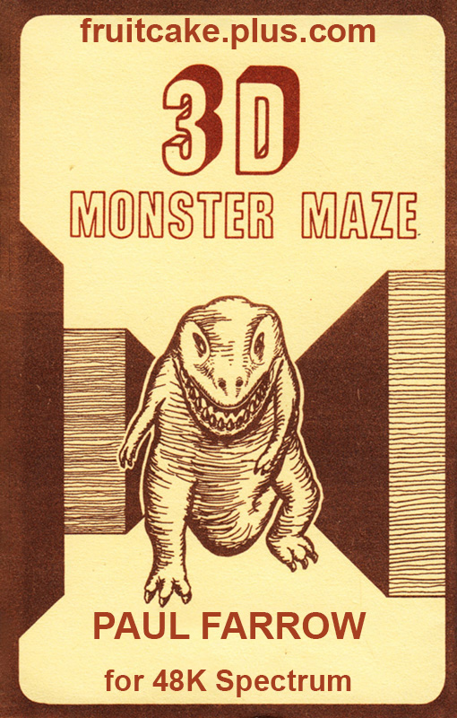
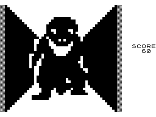

3D Monster Maze


{kind=link}

| Created by: | Paul Farrow |
| Price: | Free |
| Year: | 2016 |
This is a conversion of the classic ZX81 game 3D Monster Maze written by Malcolm Evans and originally published by J K Greye Software Ltd in 1981 and subsequently by New Generation Software Ltd. It was written by Paul Farrow, creator of the the superb SPECTRA SCART Interface.

The conversion is not a rewrite of the game but actually uses the original code to deliver an experience as close to the ZX81 version as possible. The conversion requires a Spectrum with at least 48K of RAM. To complete the conversion, a loading screen was added based upon the inlay cover artwork of the ZX81 cassette sold by New Generation Software.
3D Monster Maze was one of the first computer games to use a first-person 3D perspective. After being introduced to the game by a circus crier, the player character is transferred to a randomly generated 16x16 maze and has to find the exit. There is but one difficulty: There is a Tyrannosaurus Rex hidden in the maze. As soon as the protagonist moves, the dinosaur will begin to chase him, getting more and more active the nearer he gets. The T. Rex's state is indicated in the status bar, letting the player know if he is still far away ("Rex lies in wait"), if he's approaching ("Footsteps approaching") or if the player should really get a move on ("RUN! He is behind you"). The protagonist can run quicker than the dino, but many are the adventurers that took a wrong turn or came to a dead end. The exit, of course, lies at such a dead end and is only visible from a few steps distance.